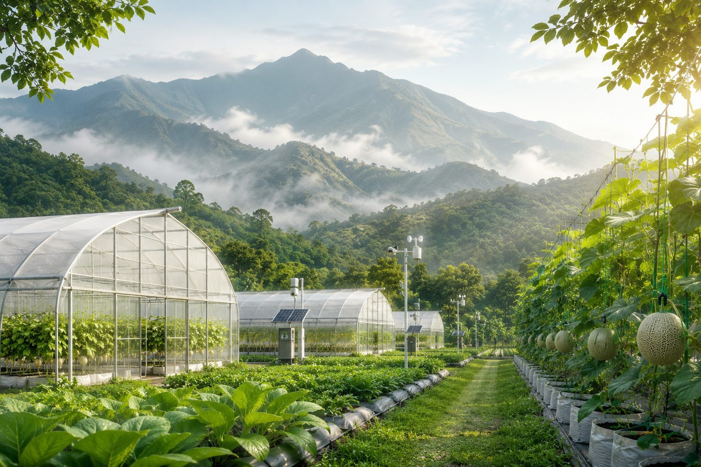
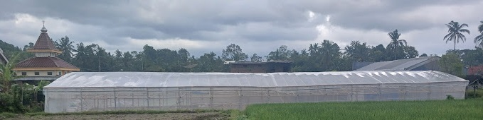
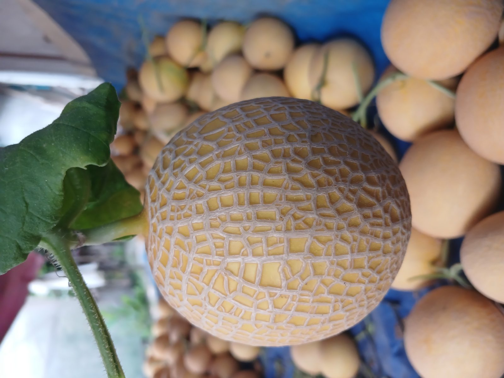

Kisah Inspiratif
🌱 Awal Mula LadangWohIjo: Dari Nol Menjadi Pelopor Greenhouse Melon Hidroponik Premium di Blitar


Solusi Greenhouse Modern & Budidaya Melon Profesional
Bersama LadangWohIjo, wujudkan pertanian masa depan di greenhouse Anda. Kami menyediakan layanan pembangunan greenhouse terbaik dan bimbingan dalam budidaya melon secara efisien dan ramah lingkungan.
LadangWohIjo adalah bagian dari PT Mahkota Agroteknologi Sejahtera (MASTER) yang fokus membangun greenhouse modern dan membimbing budidaya melon secara profesional sejak 2021.
Dengan teknologi canggih dan pengalaman, kami membantu para petani mencapai hasil terbaik. Kami juga menyediakan layanan konsultasi dan kemitraan untuk pengembangan budidaya melon.
Pelajari SelengkapnyaBersama Anda, kami wujudkan masa depan pertanian yang modern dan berkelanjutan.
Kami membangun greenhouse custom sesuai kebutuhan: untuk hobi, pendidikan, komersial, dan riset. Mulai dari rangka baja ringan, plastik UV, hingga sistem ventilasi & irigasi otomatis.
Dapatkan panduan lengkap budidaya melon modern dari hulu ke hilir: pemilihan benih, nutrisi, perawatan, hingga panen dengan metode hidroponik maupun semi-hidroponik.
Kami membantu Anda memasarkan hasil panen melon greenhouse melalui jaringan mitra, pengepul, pasar modern, maupun retail online.
Kami menyediakan layanan pembibitan melon unggul dengan standar greenhouse yang ketat, mulai dari pemilihan benih berkualitas, media tanam steril, hingga perawatan benih secara terkontrol. Dengan teknik pembibitan modern dan pengawasan rutin, kami memastikan bibit tumbuh sehat, seragam, dan siap tanam untuk hasil panen optimal.

Siap memulai budidaya melon secara modern? Kami siap mendampingi dari nol—mulai dari perencanaan greenhouse, pembibitan, hingga panen. Konsultasikan kebutuhan Anda sekarang dan jadilah bagian dari petani masa depan yang sukses!

Kami menggabungkan teknologi, pengalaman, dan pendampingan untuk memastikan setiap mitra berhasil dalam budidaya melon di greenhouse.
Kami menyediakan bibit berkualitas tinggi dengan ketahanan optimal dan produktivitas tinggi, siap tanam dan cocok untuk sistem greenhouse.
Desain greenhouse kami fleksibel, tahan cuaca, dan sesuai kebutuhan lahan serta anggaran Anda.
Kami tidak hanya membangun—kami mendampingi. Mulai dari penyemaian hingga panen, kami hadir dengan panduan teknis & monitoring langsung.
Beberapa proyek greenhouse dan budidaya melon yang telah kami selesaikan di berbagai daerah. Setiap proyek adalah bukti nyata komitmen kami dalam mewujudkan pertanian modern yang berkelanjutan.
Pelajari berbagai informasi seputar greenhouse modern, budidaya melon premium, sistem IoT pertanian, hingga teknologi autodosing bersama LadangWohIjo.
LadangWohIjo adalah penyedia layanan pembangunan greenhouse dan pendampingan budidaya melon modern. Kami membantu petani dan pemula untuk sukses dalam bertani melon berkualitas tinggi.
Tentu! Kami menyediakan pendampingan lengkap mulai dari perencanaan, pembibitan, pemeliharaan, hingga panen. Banyak mitra kami sebelumnya adalah pemula dan berhasil panen dengan baik.
Kami menyediakan berbagai tipe greenhouse seperti Gable Roof, Tunnel, dan Custom Modular yang dapat disesuaikan dengan kebutuhan dan lokasi Anda.
Kami melayani pembangunan dan pendampingan di seluruh Indonesia, dengan tim lapangan dan teknisi yang siap datang langsung ke lokasi Anda.
Sistem autodosing LadangWohIjo dirancang menggunakan kontrol berbasis mikrokontroler, dengan kemampuan pengaturan dosis nutrisi secara presisi dan monitoring real-time. Hal ini memungkinkan petani mengontrol kualitas nutrisi tanpa harus melakukan pencampuran manual setiap hari.
Artikel terbaru seputar pertanian modern, tips budidaya melon, dan pengembangan greenhouse.
Kami siap membantu Anda memulai perjalanan menuju pertanian modern dan budidaya melon profesional. Hubungi kami untuk informasi lebih lanjut, jadwal kunjungan, atau kerja sama kemitraan.


{kind=link}
{kind=link}
{kind=link}
{kind=link}
{kind=link}
{kind=link}
{kind=link}
{kind=link}